Bestemming bij Nijmegen
Kleef (Kleve)
Waar geschiedenis en natuur hand in hand gaan.
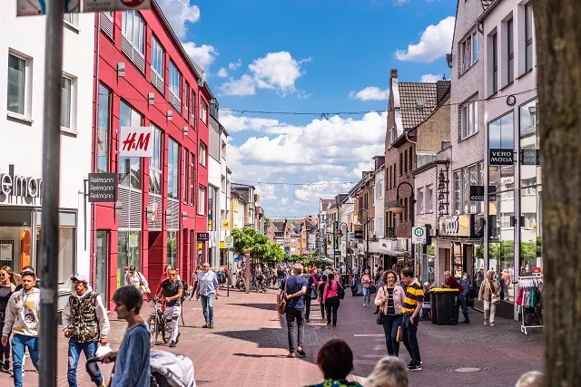
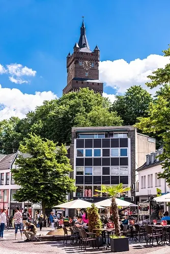
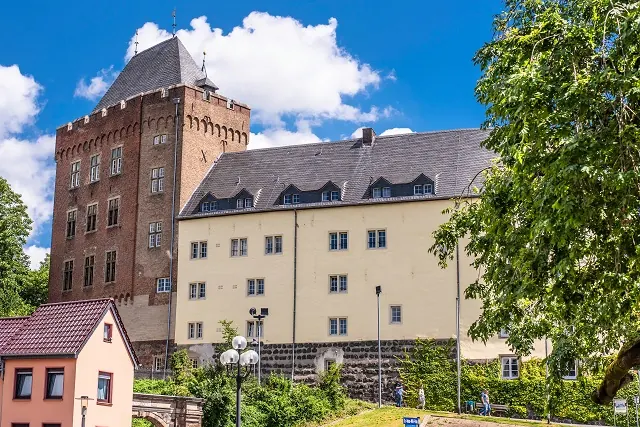
Genesteld tussen glooiende heuvels en de oevers van de Nederrijn, ligt Kleve, een stad met een rijke geschiedenis die teruggaat tot de middeleeuwen. De stad is een juweel van cultuur en natuur, waar majestueuze kastelen de skyline domineren en groene parken uitnodigen tot rustige wandelingen. Naast haar historische schatten, biedt Kleve een levendige atmosfeer met moderne faciliteiten, winkels en eetgelegenheden. Of je nu een geschiedenisliefhebber bent of gewoon wilt ontspannen in de schoonheid van de natuur, Kleve verwelkomt iedereen met open armen.
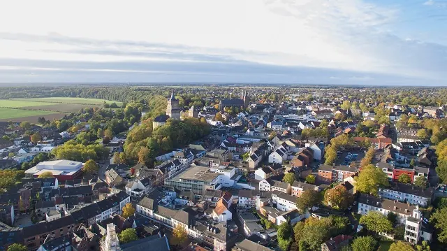
Openingstijden winkels Kleve
De meeste winkels in de binnenstad van Kleef zijn van maandag tot en met zaterdag open van ongeveer 9.30 tot 18.30 uur. Op zaterdag sluiten kleinere winkels vaak eerder, en supermarkten zijn meestal langer open.
Op zondag zijn de winkels in Duitsland dicht. Alleen op een paar verkaufsoffene Sonntage per jaar mogen ze open.
Van 27 november t/m 6 december 2026 staat de kerstmarkt rond het stadhuis, en op zondag 29 november is er een koopzondag. Lees alles in Kerstmarkt Kleve 2026.
Stadhuis KleveMinoritenplatz 1 |
Het stadhuis heeft wisselende openingstijden en voor veel zaken werk je op afspraak. Kijk voor actuele tijden op kleve.de.
Toeristische informatie
Bij het toeristenbureau in het stadhuis kun je terecht met vragen en koop je fietskaarten, ansichtkaarten en souvenirs.
- Maandag tot en met donderdag van 10.00 tot 16.00 uur
- Vrijdag en zaterdag van 10.00 tot 14.00 uur
- In het weekend is er ook informatie in de Schwanenturm, zaterdag en zondag van 11.00 tot 17.00 uur
Tourist Information Kleve
Minoritenplatz 2, 47533 Kleve
Vanuit Nederland: 0049 2821 84806
kleve-erleben.de
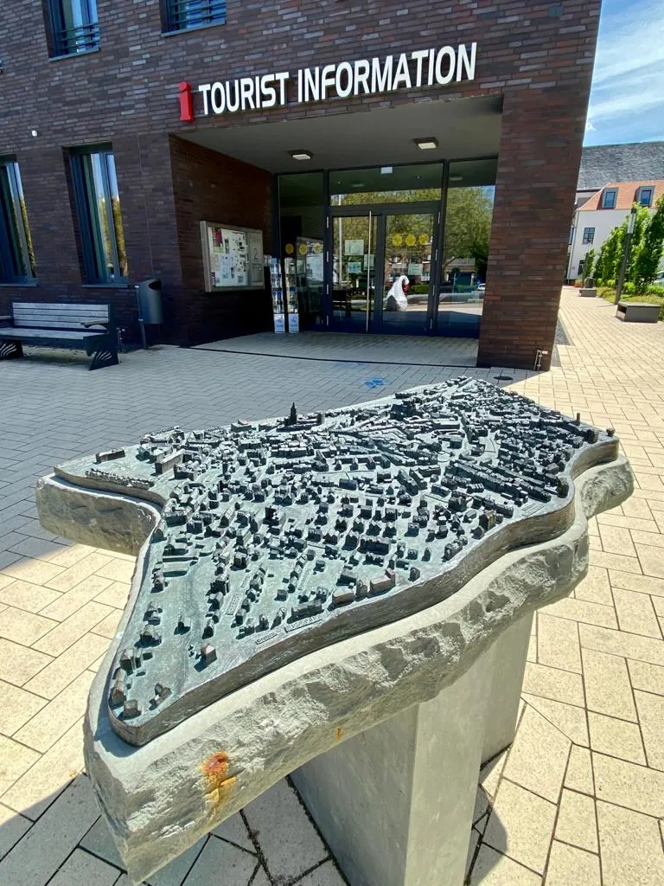
Dierentuin Kleve
Ontdek in de Dierentuin van Kleve meer dan 300 dieren van dichtbij! Veel van deze dieren mogen zelfs door de bezoekers worden gevoed met in het park verkrijgbaar voer. Het is mogelijk om een rondleiding te volgen waarin u interessante feiten hoort over de dieren en de conservatieprojecten van de dierentuin. Altijd al in de schoenen van een dierenverzorger willen staan? Volg dan de “Introductiecursus Dierverzorging” van één dag en je droom wordt werkelijkheid!
Openingstijden Dierentuin Kleve
Zomerseizoen (1 maart tot 31 oktober): 9.00 uur tot 18.00 uur
Winterseizoen (1 november tot 28/29 februari): 09.00 uur tot 17.00 uur
Laatste toegang is 30 minuten voor sluitingstijd. Bezoekers dienen het park te verlaten aan het einde van de openingstijden.
De dierentuin sluit eerder op:
Kerstavond en Oudejaarsavond: 9.00 uur tot 13.00 uur.
Adres Dierentuin Kleve
Tiergartenstraße 74, 47533 Kleve
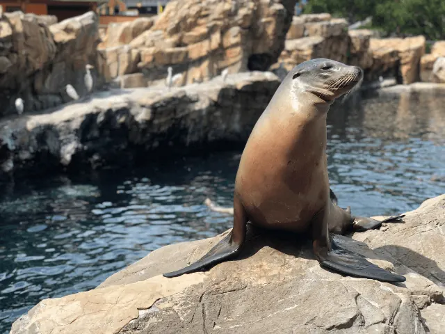
Winkelen in Kleve (Kleef)
In Kleve kan je ook leuk winkelen. Wanneer je vegatarier of veganist bent kan je hier je hart helemaal ophalen. Winkels zoals Kaufland en Lidl bieden een groot assortiment aan vega(n) eten. Vanaf Nijmegen is Kleef een klein half uurtje rijden, dus ideaal als uitje om je boodschappen te doen. Naast deze winkels zijn er nog meer winkels die je vast en zeker aanspreken:
- Kaufland
- DM Drogisterij
- DM
- TEDI
- KIK
- LIDL
- Winkelcentrum Hoffmann-Allee
- Bio markt Kleve
- Mc Donalds Kleve
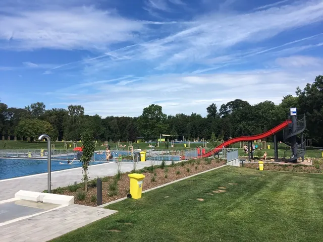
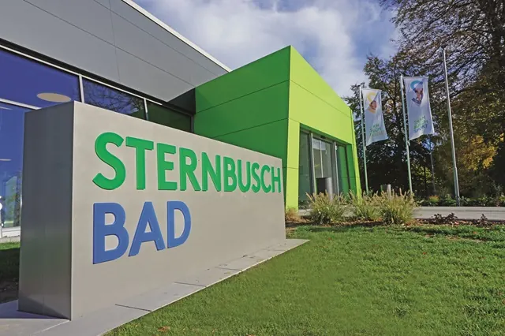
Zwemmen in Kleve
In Kleve nodigt het Sternbusch Freizeitbad u uit voor een verfrissende duik. Dit moderne zwemparadijs biedt voor elk wat wils, van de vele verschillende zwembaden tot ontspannende wellnessgedeeltes. Ideaal voor families, sportzwemmers en ontspanningszoekers. Duik in het avontuur en beleef waterpret in een unieke sfeer.
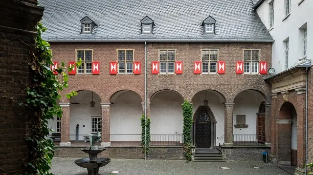
Wat is er nog meer te doen in Kleve?
Kleve is een geweldige stad om een dag naar toe te gaan. Naast het shoppen in de winkelstraat, in Kaufland, Tedi, Kik zijn er ook historische plekken waar je prima een paar uur in kan vertoeven. Wat dacht je van de Stifskerk, het Reichswald Forest War Cemetery of de Schwanenburger Kasteel.
Lees hier de 7 dingen die jij kan doen in Kleve!
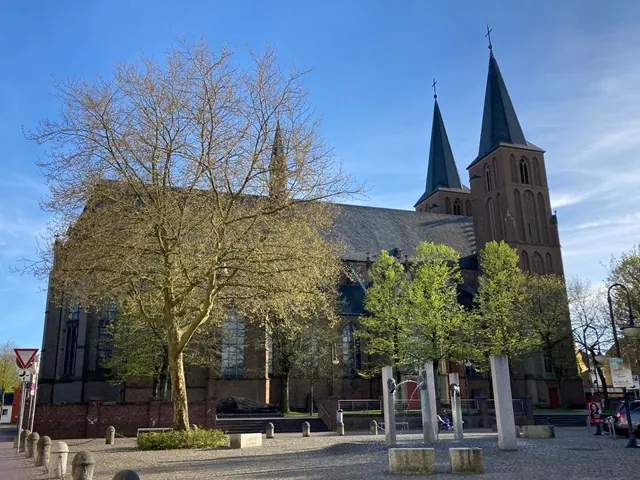
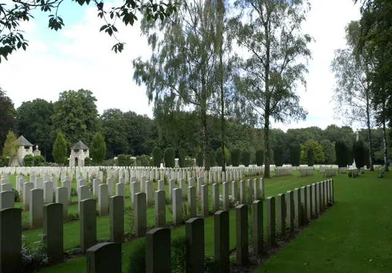
Evenementen Kleef
Bekijk hier de evenementen die gehouden worden in Kleve
Evenementen Kleve
Tickets kopen voor een evenement in KLeve kan hier
Lees ook

7x Kleef net over de grens bij Nijmegen
Net over de grens, vlak bij Nijmegen ligt Kleef, of Kleve, zoals de Duitsers zeggen. Kleef is een leuk stadje om te bezoeken en een leuk uitje; het ligt…

Zin in zee of stad? 3x perfecte uitstapjes buiten Nijmegen
Soms is het heerlijk om even de stad uit te gaan en een dag of weekend iets nieuws te ontdekken. Vanuit Nijmegen ben je in no time aan zee, in een…

3x een leuke Bed and Breakfast in Wijchen
De meest opvallende oude bezienswaardigheid in Wijchen is het centraal gelegen Kasteel van Wijchen, dat voor het eerst genoemd wordt in archiefstukken uit…